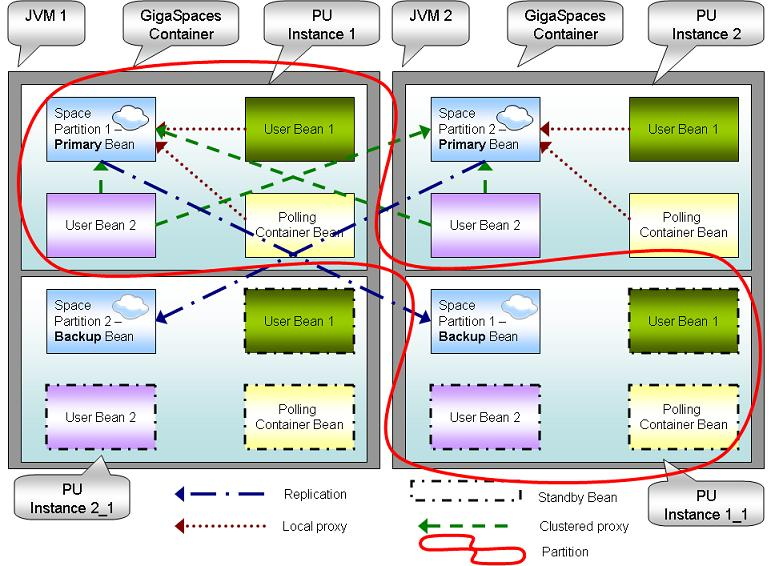

Section Summary: GigaSpaces SBA components
Space-Based Architecture
A Space-Based Architecture (SBA) implementation is a set of Processing Units, with the following properties:
- Each processing unit instances holds a partitioned space instance and one or more services that are registered on events on that specific partition. Together they form an application cluster. If the cluster is required to be highly available, each primary partition has one or more backup partitions, which run in their own processing unit instances. These instances are inactive, and become active only when their primary partition fails.
- Each Processing Unit instance handles only the data sent to the space partition it runs.
- Clients interact with the system by writing and updating objects in the space cluster, and the services on each processing unit instance react to object written to that specific instance. In an SBA application, the data will be partitioned in such a way that the services that is triggered as a result will not have to read or write data from other partitions, thus achieving data affinity and in memory read and write speeds. .
- The system can be scaled by simply increasing the number of space partitions and their corresponding processing unit instances.
- When deployed onto the Service Grid, self-healing and SLA capabilities are added.
- Full monitoring and management during runtime are available through the Management UI.

An SBA implementation, with 3 primary instances and one backup for each them, accessed by two client applications
Space-Based Architecture Artifacts
Once a Processing Unit library is deployed, a processing unit instance is created. The processing unit instance is hosted within the GigaSpaces container. If the processing unit instance includes a space, all the collocated beans within the processing unit instance inherit the space primary/backup mode: If the space running in a primary mode, they will be active; if the space running in a backup mode, they will be in a standby mode.

A deployed Processing Unit with 2 partitions and a backup. The Processing unit includes a space, polling container and tow user beans. The deployed PU hosted within 2 GigaSpaces containers
- JVM - Java process. Native OS process.
- Processing unit - Deployable package (bundle).
- GigaSpaces Container - Hosting deployed PU.
- Processing unit Instance - deployed instantiated PU.
- Space Partition - Data-Grid Member. Store data in-memory.
- Data-Grid - Collection of Space Partitions.
- Local Proxy - Access to collocated space partition.
- Clustered Proxy - Access to all space partitions.
- Primary Instance - Active space partition.
- Backup Instance - standby space partition.
- Standby Bean - Bean collocated with a backup instance.
- Partition - Collection of primary and backup processing unit instances
- Polling Container - Execution queue. Consumes objects from the space.
|